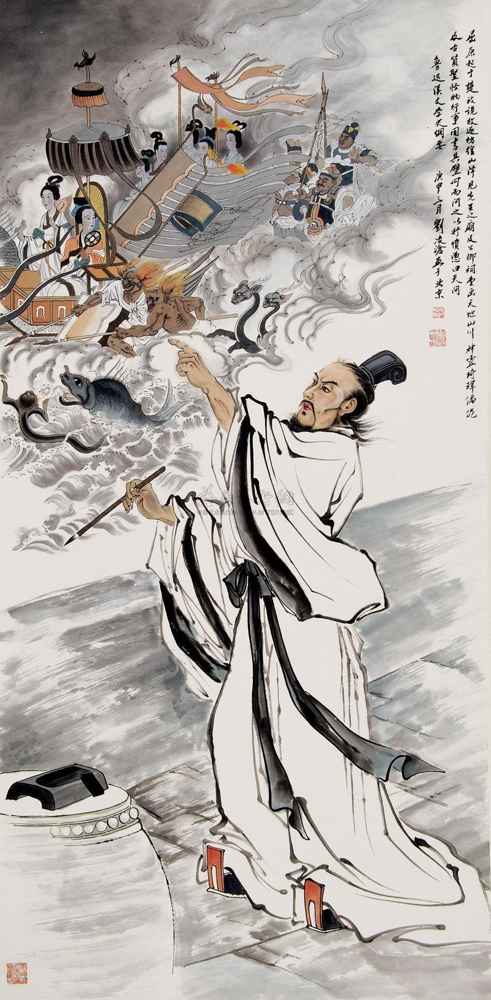

中华民族不同时期爱国主义变迁梳理
中华民族爱国主义精神历经数千年演进，其内涵、特征随历史背景迭代而不断丰富，既传承“家国一体”“忧国忧民”的核心基因，又随时代需求拓展新维度。以下按“先秦—汉至唐—宋至清—晚清近代”四大阶段，从历史背景、核心内涵、主要特征、代表性诗句四方面系统梳理，并总结其演变路线。
先秦时期
约公元前21世纪-公元前221年一、先秦时期（爱国主义初步形成）
1. 历史背景
- 早期国家脱胎于氏族部落联盟，西周建立“血缘宗法共同体”，实行“家国同构”的分封制
- 春秋战国时期，诸侯兼并战争频繁，周王室衰微，各诸侯国需强化“国家认同”以凝聚力量
- 先秦儒家提出“舍生取义”“自任以天下之重”的道德理想，为爱国精神奠定伦理基础
2. 核心内涵
- 西周至春秋：以“保族宜家”“保其家邦”为核心，维护宗族与诸侯国的整体利益（“邦”与“家”统称“家邦”）
- 战国时期：“国家意识”明确，强调“忠国”“利国”“强国”，主张个人为国家牺牲利益（如“苟利社稷，死生以之”）
- 屈原时代：将“爱国”与“忧民”结合，追求“美政”理想，以“以身殉国”彰显对故土与人民的忠诚
3. 主要特征
- 家国一体性：宗法制度下，“忠族”即“忠国”，“爱家”与“爱国”无明确界限
- 贵族主导性：爱国主体限于士大夫与贵族，普通民众的国家认同较弱
- 伦理奠基性：以“礼”“忠”“义”为道德准则，为后世爱国精神提供价值源头
4. 代表性诗句
| 诗句内容 | 出处 | 核心主旨 |
|---|---|---|
| “保其家邦” | 《诗经・小雅・瞻彼洛矣》 | 保卫诸侯国整体利益，早期“家国一体”的直接体现 |
| “岂曰无衣？与子同袍。王于兴师，修我戈矛” | 《诗经・秦风・无衣》 | 秦军团结抗敌，彰显保家卫国的同仇敌忾 |
| “临患不忘国，忠也” | 《左传・昭公元年》 | 定义“忠”为“不忘国”，明确爱国的道德属性 |
| “长太息以掩涕兮，哀民生之多艰” | 屈原《离骚》 | 忧国忧民，将个人命运与楚国兴衰绑定 |
| “苟利社稷，死生以之” | 《左传・昭公四年》（子产） | 为国家利益不惜牺牲生命，后世爱国思想的重要源头 |

先秦时期的青铜器，象征礼乐与国家权威